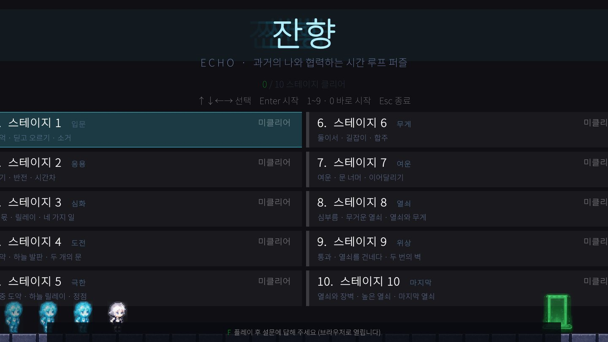
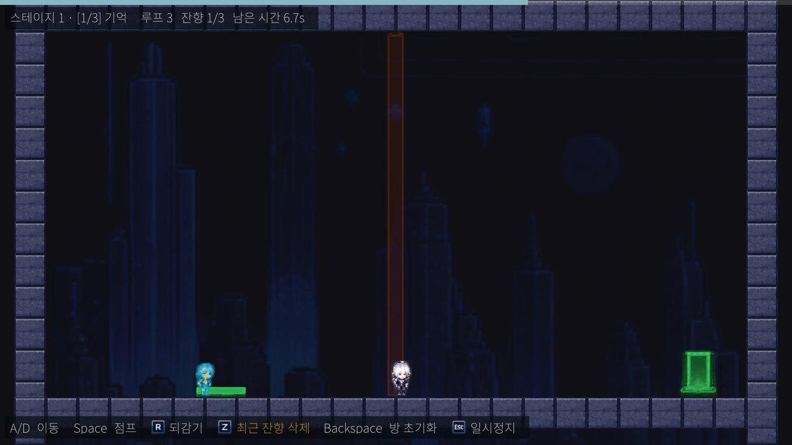
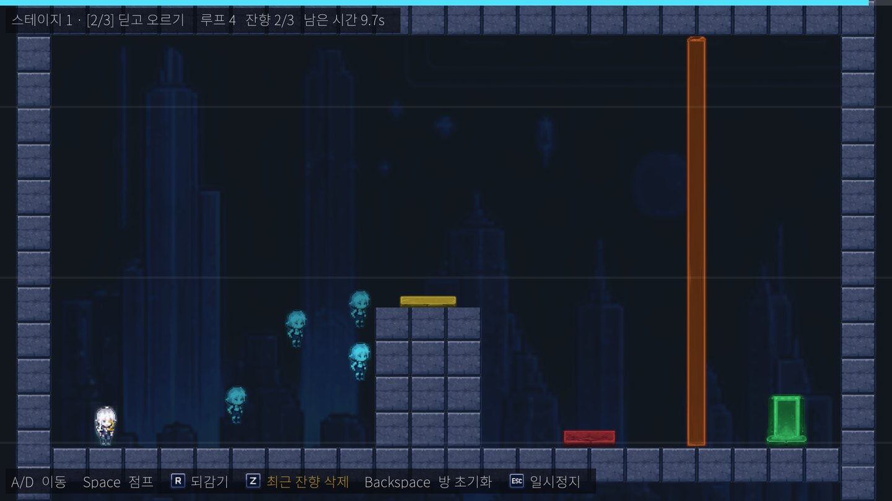
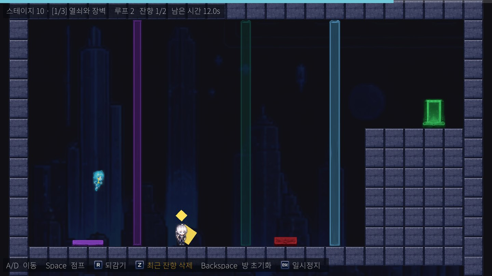
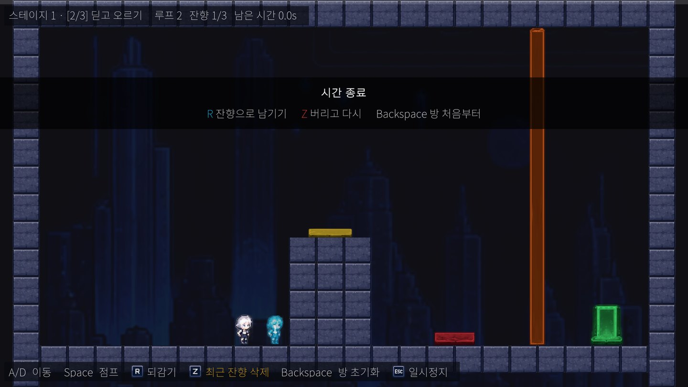

잔향 플레이 영상
영상 준비 중
영상 준비 중
30방 (스테이지 10 × 3)
10+기믹 종류
1인기획 + AI 협업 구현
1주개발 기간






스테이지 선택, 발판과 문, 잔향 2단 탑, 되감기 연출, 스테이지 10 열쇠와 장벽, 시간 종료 선택. Windows 빌드 v1.0 화면.
개요
10초 동안의 움직임이 녹화되고, 되감으면 그 기록이 '잔향'이 되어 그대로 다시 움직인다. 과거의 내가 발판을 밟아 문을 열고, 닿지 않는 절벽은 과거의 나를 딛고 오른다. 목표 감정은 "내 계획이 맞아떨어지는 순간의 쾌감".
담당 업무
- 컨셉 기획서, WBS 작성, 규칙 설계와 30개 방 레벨 디자인, 이동 방법별 수치 밸런싱
- Claude로 구현: 루프, 녹화 시스템, 기믹 10여 종, 로비, HUD, 되감기 연출 / 에디터 스크립트로 30개 방 자동 생성
레벨 설계: 방법별 도달 높이
| 열쇠 든 점프 | 맨몸 점프 | 잔향 딛기 | 잔향 2단 탑 (잔향 위에 잔향) | 잔향 점프대 |
|---|---|---|---|---|
| 2.0 | 3.3 | 4.5 | 5.7 | 7.9 |
절벽 높이를 두 값 사이로 정해 "이 방법이 아니면 오를 수 없는" 방을 만들었다. 스테이지마다 방 1에서 새 요소를 소개하고, 방 3에서 앞 요소를 조합한다.
문제, 판단, 해결
| 문제 | 판단 | 해결 |
|---|---|---|
| 잔향 위에 서면 함께 떠오르는 버그 | 막기보다 퍼즐 재미로 쓸 수 있다 | '잔향 점프대'를 정식 기믹으로 채택, 스테이지 4~5의 중심 규칙으로 |
| 후반 스테이지가 같은 풀이의 변주뿐 | 새로 배우는 규칙이 필요하다 | '들면 점프가 낮아지는 열쇠'로 과거의 나에게 심부름 맡기는 퍼즐 |
| 마지막 방에서 의도보다 쉬운 풀이 | 감이 아닌 수치로 막아야 한다 | 점프 속도, 중력으로 이동 거리를 계산해 열쇠, 천장, 절벽 높이 조정 |
문서
배운 점기획서는 만드는 사람이 그대로 구현할 만큼 구체적이어야 하고, 의도는 수치와 조건으로 고정해야 지켜진다.